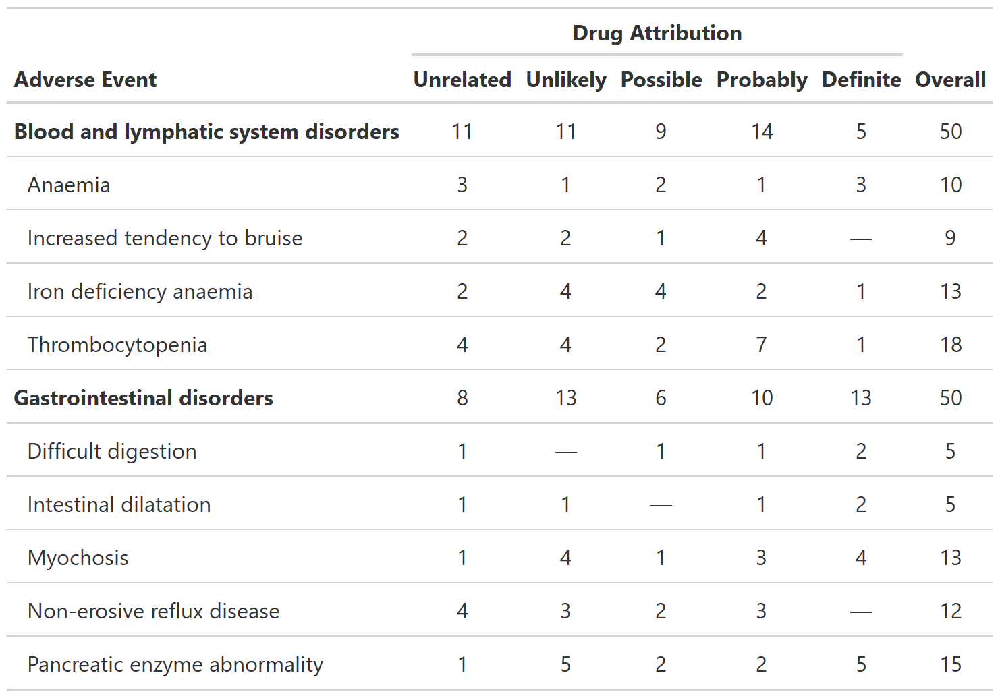
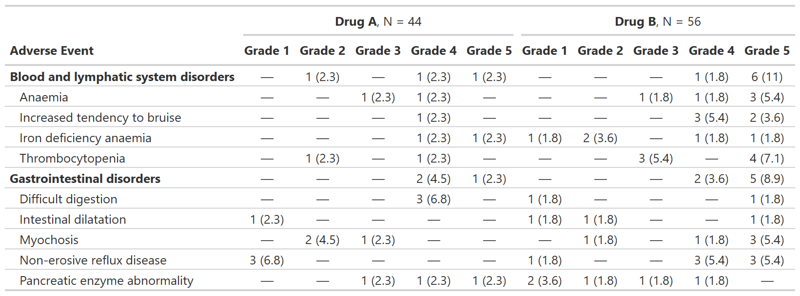
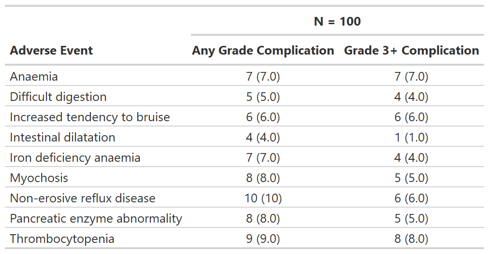
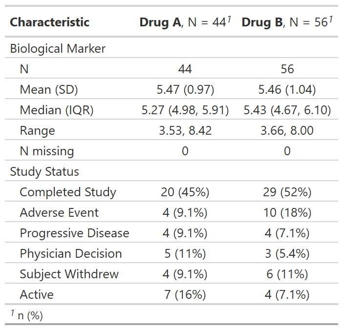
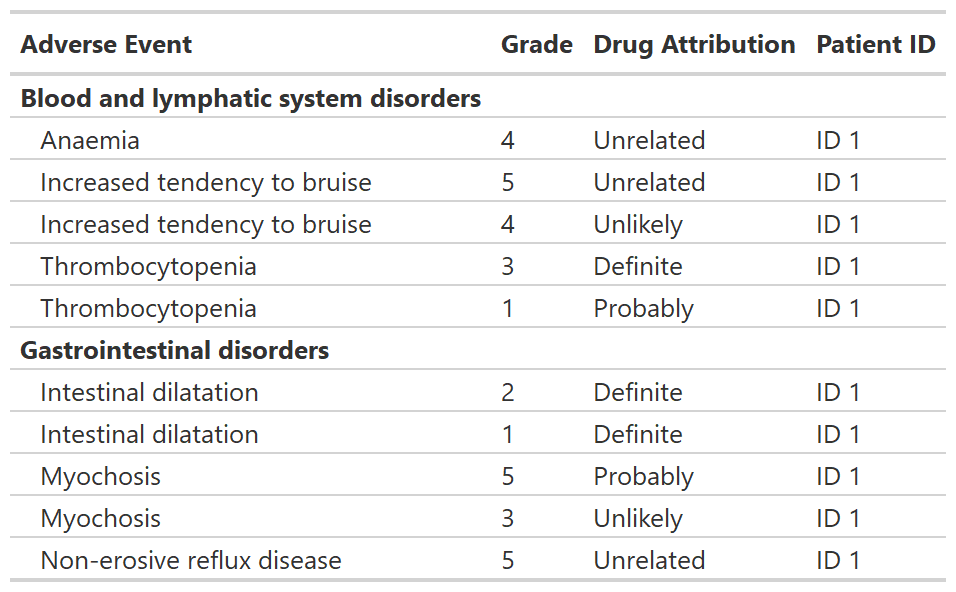

Installation
You can install {gtreg} with the following code.
install.packages("gtreg")You can install the development version of {gtreg} from GitHub with:
# install.packages("devtools")
devtools::install_github("shannonpileggi/gtreg")Overview
The {gtreg} package creates tabular data summaries appropriate for regulatory submissions. The package builds the tables using {gtsummary}.
Here are slides and a recorded talk (17 min) from “Introducing {gtreg}: an R package to produce regulatory tables for clinical research” presented at the 2022 R in Medicine conference.
Functions for adverse event (AE) reporting
Summarize Raw Adverse Counts
tbl_ae_count() provides counts of all AEs, and omits percentage statistics as multiple AEs can occur per subject.
library(gtreg)
tbl_ae_count <-
df_adverse_events |>
tbl_ae_count(
ae = adverse_event,
soc = system_organ_class,
by = drug_attribution
) |>
add_overall(across = "by") |>
modify_spanning_header(all_ae_cols() ~ "**Drug Attribution**") |>
bold_labels()
Summarize Adverse Events by Grade
tbl_ae() counts one AE per subject by maximum grade; percentage statistics are provided by default with the denominators reflecting the number of patients in the study.
library(gtreg)
gtsummary::theme_gtsummary_compact()
#> Setting theme "Compact"
tbl_ae <-
df_adverse_events |>
tbl_ae(
id_df = df_patient_characteristics,
id = patient_id,
ae = adverse_event,
soc = system_organ_class,
by = grade,
strata = trt
) |>
modify_header(all_ae_cols() ~ "**Grade {by}**") |>
bold_labels()
Focus on rates of high grade complications
tbl_ae_focus() also counts one AE per subject by maximum grade, and is a convenience to summarize dichotomous AE attributes.
tbl_ae_focus <-
df_adverse_events |>
tbl_ae_focus(
id_df = df_patient_characteristics,
id = patient_id,
ae = adverse_event,
include = c(any_complication, grade3_complication)
)
Other Functions for Clinical Reporting
Regulatory summary
tbl_reg_summary() creates a data summary table often seen in regulatory submissions.
tbl_reg_summary <-
df_patient_characteristics |>
tbl_reg_summary(by = trt, include = c(marker, status))
#> Setting theme "Compact"
Print an AE listing
tbl_listing() creates a gtsummary-class listing of data to enable grouped printing.
tbl_listing <-
head(df_adverse_events, n = 10) |>
select(system_organ_class, adverse_event, grade, drug_attribution, patient_id) |>
dplyr::arrange(adverse_event, desc(grade)) |>
tbl_listing(group_by = system_organ_class) |>
bold_labels()
Code of Conduct
Please note that the gtreg project is released with a Contributor Code of Conduct. By contributing to this project, you agree to abide by its terms.